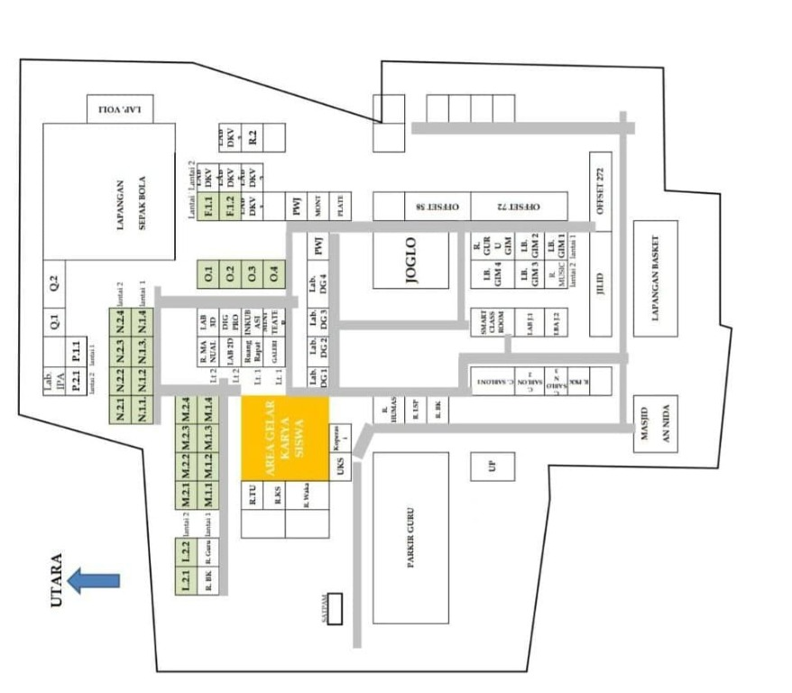

Total lokasi
0
SISTEM INFORMASI FASILITAS SEKOLAH
Jelajahi Setiap Sudut Sekolah Kita.
Temukan informasi fasilitas, fungsi, dan aturan penggunaan di lingkungan SMK Negeri 11 Semarang.
Jelajahi Fasilitas
TENTANG WEBSITE
Informasi fasilitas dalam satu tempat
Jelajah Sekolahku adalah prototype sistem informasi fasilitas sekolah untuk membantu warga sekolah mengenali lokasi dan fungsi ruang.
Informasi di halaman ini disusun untuk keperluan pembelajaran dan demonstrasi, bukan data resmi sekolah.
Lihat Denah
PETA LINGKUNGAN
Denah Sekolah
Gunakan denah sebagai gambaran lingkungan sekolah.

Pilih nama lokasi untuk membuka detail fasilitas.
Lihat daftar fasilitas
DIREKTORI FASILITAS
Jelajahi Lingkungan Sekolah
Cari lokasi atau pilih kategori untuk menyaring daftar.
Laboratorium
0Lapangan
0Gedung & fasilitas lain
0Menampilkan 0 dari 0 lokasi
Belum ada lokasi yang cocok. Coba kata kunci atau kategori lain.
MASUKAN WARGA SEKOLAH
Saran & Laporan Fasilitas
Sampaikan saran atau laporkan kondisi fasilitas untuk keperluan demonstrasi prototype.
Prototype pembelajaran
Laporan prototype disimpan di Firebase Firestore. Jangan masukkan data pribadi sensitif.